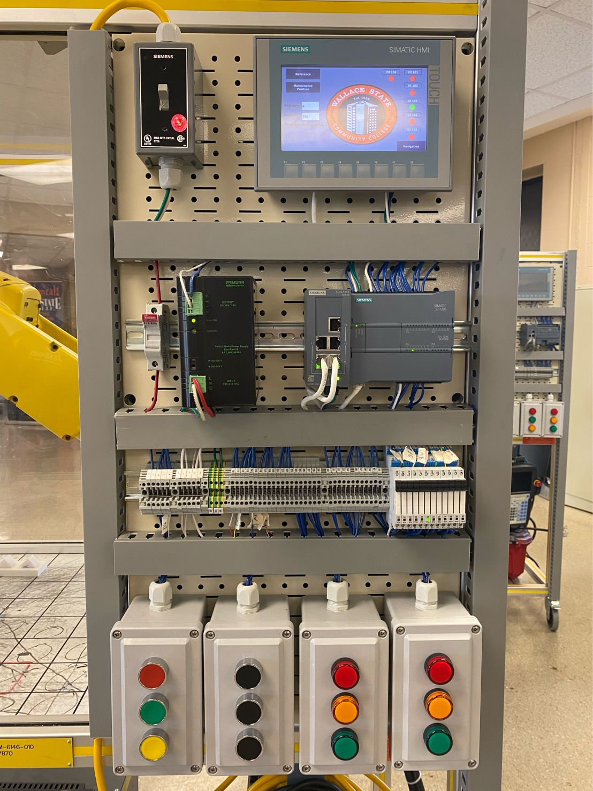

Capstone Project
May 2022
This was the final project I completed at Wallace State during my time in the F.A.M.E. Mechatronics program. Me and my partner built this PLC panel from scratch and mounted onto the fanuc robotic trainer. We then wired the PLC and Robot together so they could communicate. Due to this robot not having the ethernet option we had to use the CRMA15 plug. This limited us to a few inputs and outputs. However, we set up group inputs and outputs in order to have a much larger amount of options. Then, we created a main program that could jump to whichever program the PLC called up using the HMI we designed. Also added a handshake routine to let the PLC know when the robot was performing a task or when it was done. This could be used for any application such as clamps, sensors, or motors, but we did not have that equipment.
